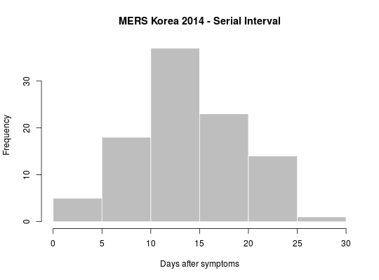

This function extract attributes of cases involved in contacts using case information provided in
the linelist of an epi_contacts dataset. If not provided, the function used to
process attributes will adjust to the type of attribute selected (see details).
get_pairwise(x, attribute, f = NULL, hard_NA = TRUE)
epi_contacts objectif (require(outbreaks)) { ## example using MERS outbreak in Korea, 2014 head(mers.korea.2015[[1]]) head(mers.korea.2015[[2]]) x <- make_epi_contacts(linelist=mers.korea.2015[[1]], contacts=mers.korea.2015[[2]], directed=TRUE) ## estimate serial interval (onset->onset) SI <- get_pairwise(x, "dt_onset") SI summary(SI) hist(SI, col="grey", border="white", xlab="Days after symptoms", main="MERS Korea 2014 - Serial Interval") ## check gender mixing: get_pairwise(x, "sex") # not good, we want 2-way table get_pairwise(x, "sex", f=table) # use custom function fisher.test(get_pairwise(x, "sex", f=table)) # test association }#> #> Fisher's Exact Test for Count Data #> #> data: get_pairwise(x, "sex", f = table) #> p-value = 1 #> alternative hypothesis: true odds ratio is not equal to 1 #> 95 percent confidence interval: #> 0.06158088 5.26628732 #> sample estimates: #> odds ratio #> 0.712926 #>